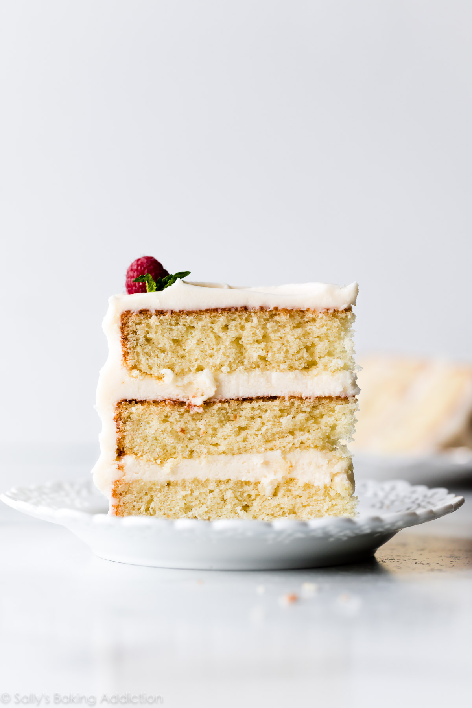

Cake Recipe

Ingredients
- 3 and 2/3 cups cake flour
- 1 teaspoon salt
- 2 teaspoons baking powder
- 3/4 teaspoon baking soda
- 1 and 1/2 cups unsalted butter, softened to room temperature
- 2 cups granulated sugar
- 3 large eggs & 2 egg whites at room temperature
- 1 tablespoon pure vanilla extract
- 1 and 1/2 cups buttermilk at room temperature
Vanilla Buttercream
- 1 and 1/2 cups unsalted butter softened to room temperature
- 5 and 1/2 cups confectioners' sugar
- 1/3 cup whole milk or heavy cream
- 1 and 1/2 teaspoons pure vanilla extract
- 1/8 teaspoon salt
Steps
- Preheat oven to 350 degrees fahrenheit
- Grease three 9-inch cake pans, line with parchment paper, then grease the parchment paper
-
- Whisk the cake flour, salt, baking powder, and baking soda together, set them aside
- Using a handheld or stand mixer fitted with a paddle or whisk attachment, beat the butter and sugar together on high speed until smooth and creamy for about 3 minutes
- Scrape down the sides and up the bottom of the bowl with a rubber spatula as needed
- Beat in 3 eggs, 2 egg whites, and vanilla extract on high speed until combined for about 2 minutes
- Scrape down the sides ad up the bottom of the bowl as needed
- With the mixer on low speed, add the dry ingredients just until combined
- With the mixer still running on low, pour in the buttermilk and mix just until combined
- Pour batter evenly into cake pans
- Bake for around 23-26 minutes or until the cakes are baked through
- Make the frosting
- Assemble and decorate
- Refrigerate cake for atleast 1 hour before slicing
- Cover leftover cake tightly and store in the refrigerator for up to 5 days